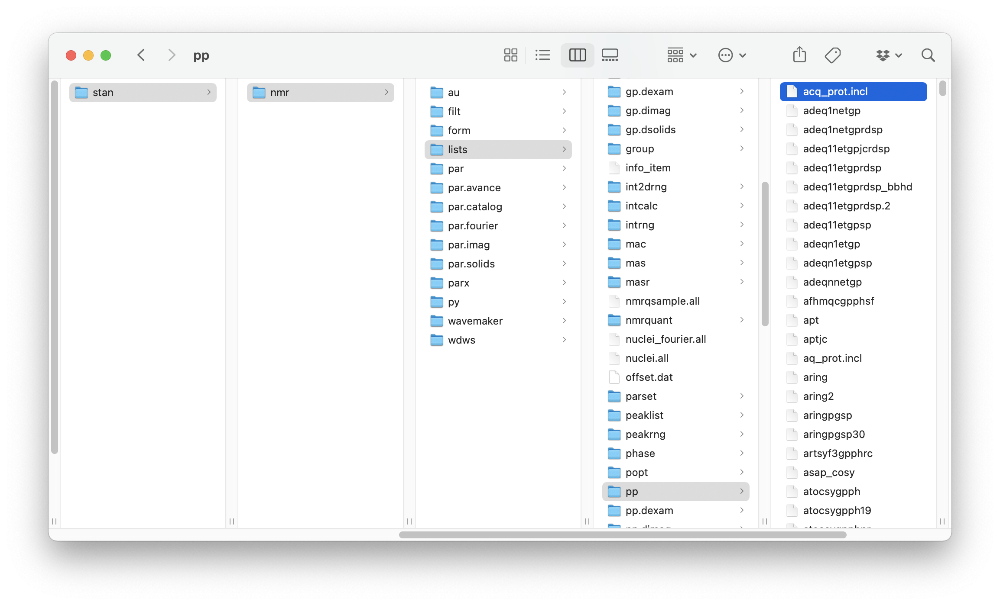
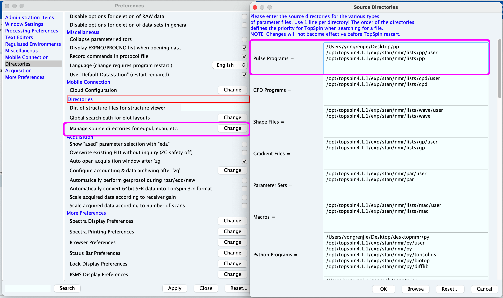
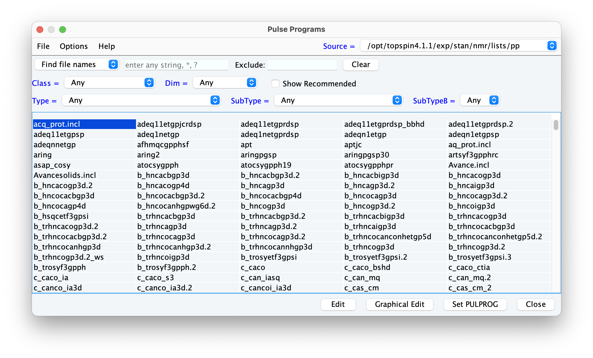

Before diving into the syntax of a pulse programme, we’ll first take a quick look at where pulse programmes are stored in TopSpin, and how you can inspect and edit them.
(This is part 1 of a series of posts on pulse programming in TopSpin. For the other parts, see the table of contents here.)
TopSpin’s directory layout
The entire TopSpin programme is usually installed in C:\Bruker\TopSpinX.Y.Z on Windows, or /opt/topspinX.Y.Z on macOS/Linux, where X.Y.Z is the TopSpin version. (This tutorial will cover both TopSpin 3 and 4, i.e. X = 3 or 4.)
There are a number of directories in there, but the part that we will deal with is almost always going to be inside $TS/exp/stan/nmr (where $TS is the TopSpin installation directory).
In particular, if you open $TS/exp/stan/nmr/lists/pp, you should find a large number of files in there. These are ‘default’ pulse programmes that ship with TopSpin; you should never edit these. Here’s how it looks on my Mac:

TopSpin provides a different directory $TS/exp/stan/nmr/lists/pp/user for users to add their own pulse programmes. On a fresh installation of TopSpin, this directory will be empty; but on a typical spectrometer this will also be full of stuff which other people have set up.
By default, when executing an experiment, TopSpin only searches in these two folders for pulse programmes. It searches in .../lists/pp/user first, and then if it can’t find it, searches in .../lists/pp. If you place pulse programmes in any other directory, TopSpin won’t know where to find them.
Adding your own directory (optional)
If you plan to do a lot of pulse programming, you may eventually want to create your own personal directory in order to avoid cluttering .../lists/pp/user. This directory can be created can be anywhere on the computer, but you have to instruct TopSpin to add the directory to the search path.
To do this, open TopSpin preferences (in TopSpin 3 this is under the Manage tab; in TopSpin 4 this is the gear icon in the top-right). Click on the Directories section, and click on Manage source directories for edpul, edau, etc.. Then add your own folder to the first box labelled Pulse programs.
In the following screenshot, I’ve added the directory /Users/yongrenjie/Desktop/pp at the very top; this means that TopSpin will search inside this first, before it looks inside the default directories.

Making a new pulse programme
As long as you put them in the correct directory, you can create pulse programme files using any plain-text editor that you like (e.g. Notepad, TextEdit, or even more code-oriented editors like VS Code, vim, or emacs).
However, this can get a bit tiresome as you always have to dig five or six directories deep!
TopSpin actually provides a minimalistic editor which allows you to create and modify pulse programmes. To access it, type edpul into the TopSpin command line. TopSpin shows you a list of pulse programme files found in its search path (to switch between directories in the search path, use the dropdown box at the top-right). You can then double-click on any entry to edit it, or create an entirely new one from File > New.

edpul interface in TopSpin.A very common scenario is that we want to make some small modifications to a pulse programme that already exists, and save it as a different pulse programme. To do this, open the ‘base’ pulse programme which you want to modify, click File > Save As, and enter the new name and directory to save it in.
At this point, it’s worth having a look around this interface to see what you can do with it; we’ll be seeing a lot of it over the course of the next few posts. You’ll notice, for example, that if you try to edit one of the ‘default’ pulse programmes in .../lists/pp, TopSpin won’t let you do it: it’ll open a window where you can view the pulse programme, but not edit it. Anyway, once you’re ready, move on to the next post!